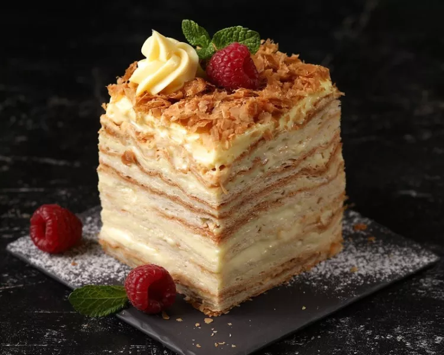
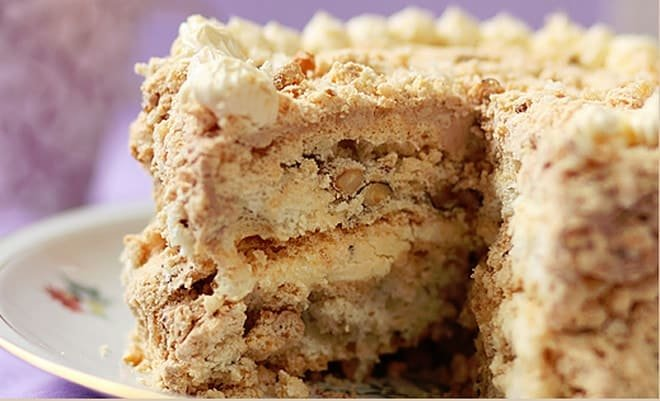
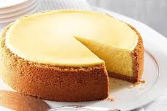
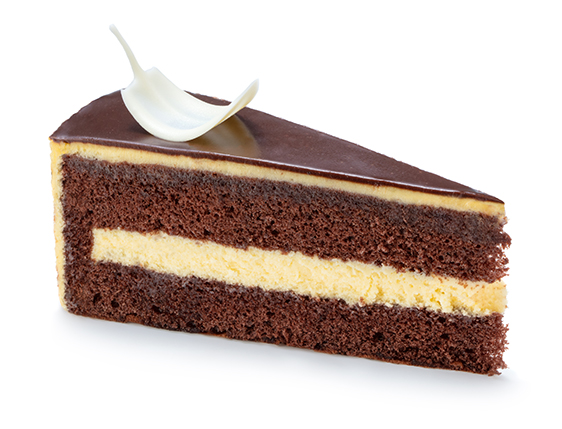
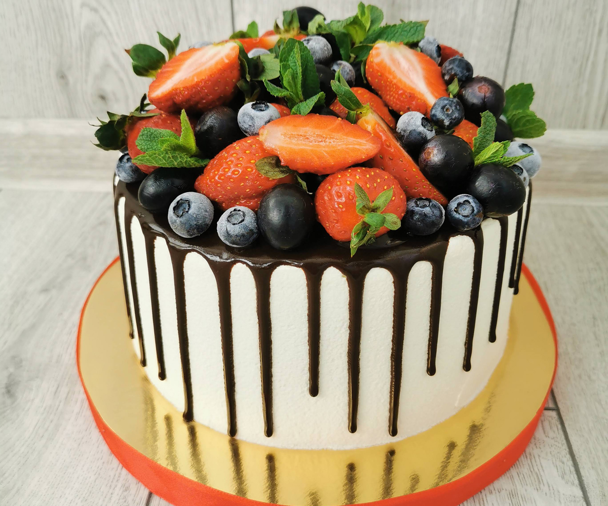
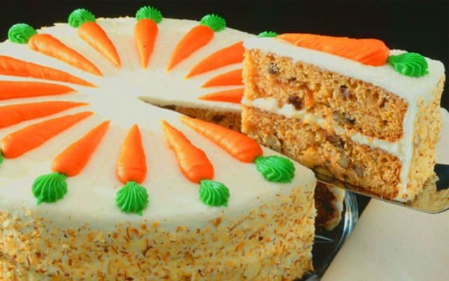
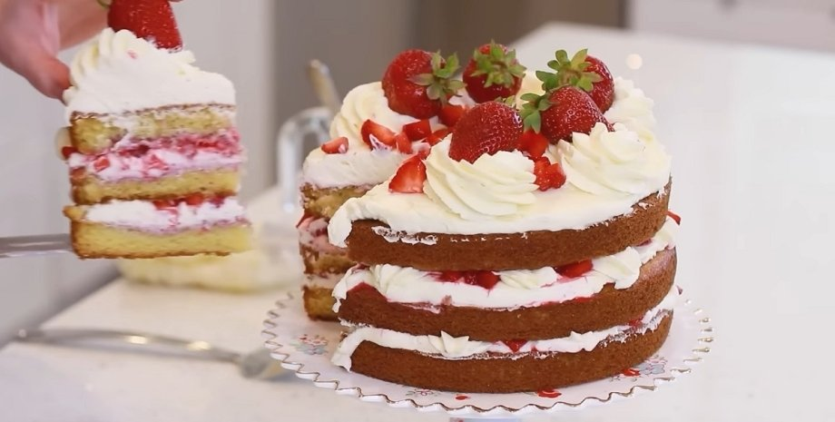
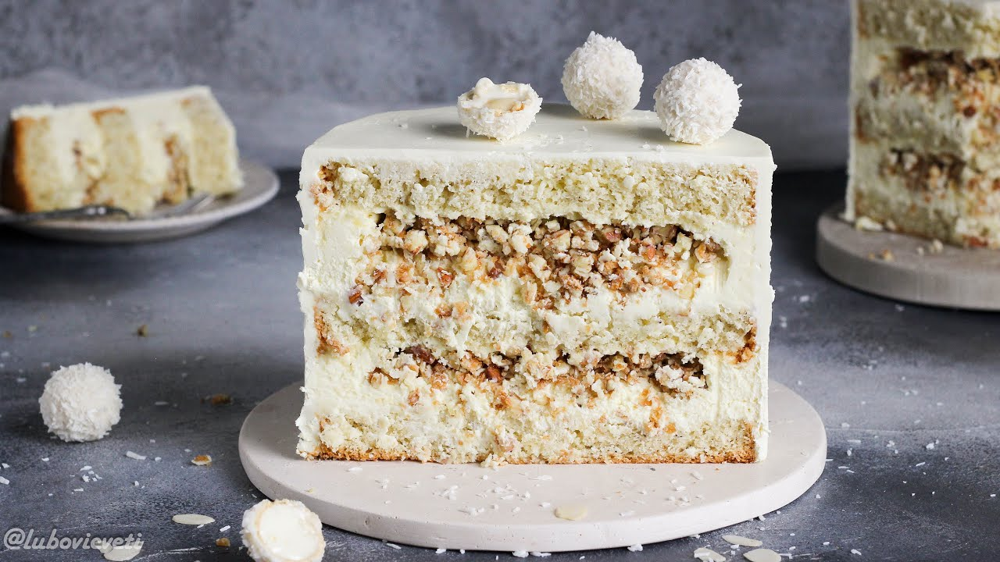
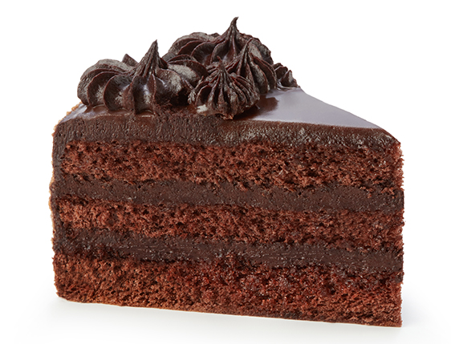

головна
про автора
рецепти
замовити

Торт Наполеон
Інгредієнти:
Борошно, масло, яйця, молоко, цукор.
Рецепт:
Зроби тісто, розкачай коржі, випікай, зварю крем, намаж, склади вежу, залиш на ніч.
Медовик
Інгредієнти:
Мед, яйця, борошно, сметана, цукор.
Рецепт:
Тісто з медом, кілька коржів, перемазати сметанним кремом, охолодити.

Київський
Інгредієнти:
Білки, цукор, горіхи, борошно, вершкове масло.
Рецепт:
Безе з горіхами, крем «Шарлот», поєднати шари, прикрасити.

Чізкейк
Інгредієнти:
Сир кремовий, яйця, печиво, масло, цукор.
Рецепт:
Основу з печива запекти, влити сирну масу, випікати або охолодити.

Пташине молоко
Інгредієнти:
Яйця, цукор, желатин, масло, шоколад.
Рецепт:
Бісквіт, суфле з желатином, глазур шоколадна зверху.

Фруктовий торт
Інгредієнти:
Бісквіт, вершки, свіжі фрукти, желе.
Рецепт:
Бісквітні шари з кремом, фрукти зверху, залити желе.

Морквяний торт
Інгредієнти:
Морква, горіхи, кориця, борошно, крем-сир.
Рецепт:
Вологе тісто з морквою, крем на основі сиру, декілька шарів.

Сметанник
Інгредієнти:
Сметана, борошно, яйця, цукор, сода.
Рецепт:
Темне та світле тісто, прошарки зі сметанним кремом.

Рафаелло
Інгредієнти:
Кокосова стружка, згущене молоко, бісквіт, вершки.
Рецепт:
Білий бісквіт, крем з кокосом і згущеним молоком, прикраса.

Шоколадний торт
Інгредієнти:
Какао
борошно
яйця
масло
цукор
Рецепт:
Замішай шоколадне тісто, випічи бісквіт, зроби ганаш, перемаж шари.